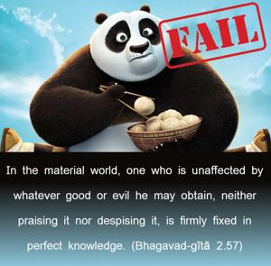
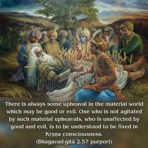

In the material world, one who is unaffected by whatever good or evil he may obtain, neither praising it nor despising it, is firmly fixed in perfect knowledge.


There is always some upheaval in the material world which may be good or evil. One who is not agitated by such material upheavals, who is unaffected by good and evil, is to be understood to be fixed in Kṛṣṇa consciousness. As long as one is in the material world there is always the possibility of good and evil because this world is full of duality. But one who is fixed in Kṛṣṇa consciousness is not affected by good and evil, because he is simply concerned with Kṛṣṇa, who is all-good absolute. Such consciousness in Kṛṣṇa situates one in a perfect transcendental position called, technically, samādhi.